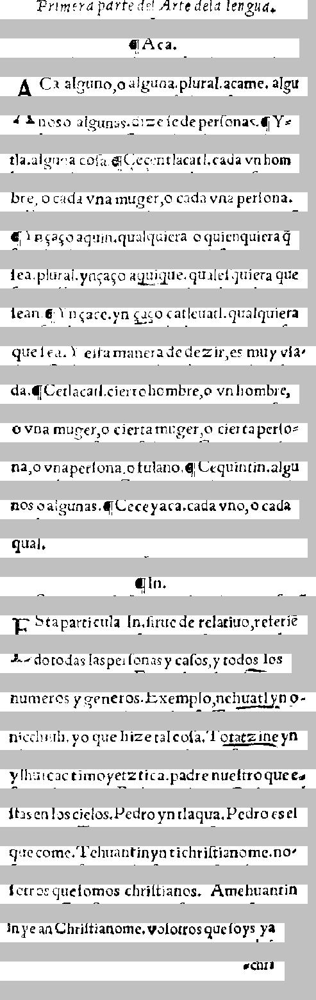

   Primera parte del e|tre de la lengua.  
    Primera parte del Arte de la lengua.

      ICAc\`a.      
                ¶Aca.

 A Ca alguno, o alguna, plurali ac\`am\`e. \`algt\ii 
ACa alguno, o alguna. plural. acame. algu

 44 nos o algunas forzo|o de per|onas  II Y- 
nos o algunas. dize |e de per|onas. ¶Y-

 tla- alguna co|a VICcecentlacatl. cada vn hom- 
tla. alguna co|a. ¶Cecentlacatl. cada vn hom

 bre, o cada vna muger, \`o cada vna per|ona.  
bre, o cada vna muger, o cada vna per|ona.

 I. Yn \cca\cco aquin- qualquiera oquich quittaq 
¶Yn\cca\cco aquin. qualquiera o quienquiera \~q

 lca, plural. yn \cca\cco aquique quale|quiera q'36 
|ea. plural. yn\cca\cco aquique. quale|quiera que

 I649 I Yn\ccaco, yn tete\`o catl\`euatl qualquiera 
|ean. ¶Yn\ccace. yn \ccaco catleuatl. qualquiera

 que |ea. Y e|ta manera de decir, es muy v|a- 
que |ea. Y e|ta manera de dezir, es muy v|a-

 da. I. Cetlacatl cierto hombre, o vn hombre, 
da. ¶Cetlacatl. cierto hombre, o vn hombre,

 \`o vna muger, o cierta muger, o cierta per|\`o - 
o vna muger, o cierta muger, o cierta per|o-

 94, \`o vna per|onajo fulano II Cequintin . alg14 
na, o vna per|ona, o fulano. ¶Cequintin, algu

 1696 o algunas. IICeceyac\`a cada vno, \`o cada 
nos o algunas. ¶Ceceyaca. cada vno, o cada

 894 i-            
qual.

       I3 In .         
                ¶In.

  In bra particula. Ini|i rite de relatiuo, referir 
Esta particular In. |irue de relatiuo, referi\~e 

 45-do todas las per|onas y ca|os, y todos, los 
do todas las per|onas y ca|os, y todos los

 numeros y generos Jaxemplo, nel2222.).99 - 
numeros y generos. Exemplo, nehautlyn o-

 nicchiuh, yo que hizo tal co|a. Ti22212879 
nicchiuh. yo que hize tal co|a. totatzine yn

 ylhu\iicactimoyetztica, padre nue|tro que t- 
ylhuicac timoyetztica. padre nue|stro que e-

 |tas en los cielos. Pedro yn tlaqua, Pedro es el 
|tas en los cielos. Pedro yn tlaqua. Pedro es el

 que come. Tehuantin yn tichri|tian om\`e-n\`o- 
que come. Tehuantin ynti chri|tianome. no-

 |otros que |omos  chri|tianos, Am\`ehuanti9 
|otros que |omos chri|tianos. Amehuantin

 1976443Chri|tianum et vo|otros que|\`o76274 
in ye an Chri|tianome. vo|otros que |oys ya

           16911 
                    -chri


===============================================


   [spanish Primera parte del e|tre de la lengua.  
      ][nahuatl ICAc\`a.      
 A Ca ][spanish alguno, o alguna, ][latin plurali ][nahuatl ac\`am\`e. \`algt\ii 
 ][spanish 44 nos o algunas forzo|o de per|onas  II ][nahuatl Y- 
 tla- ][spanish alguna co|a ][nahuatl VICcecentlacatl. ][spanish cada vn hom- 
 bre, o cada vna muger, \`o cada vna per|ona.  
 I. ][nahuatl Yn \cca\cco aquin- ][spanish qualquiera ][nahuatl oquich quittaq 
][null  [nahuatl lca, ][latin plural. ][nahuatl yn \cca\cco aquique ][spanish quale|quiera ][nahuatl q'36 
 I649 I Yn\ccaco, yn tete\`o catl\`euatl ][spanish qualquiera 
 que |ea. Y e|ta manera de decir, es muy v|a- 
 da. I. ][nahuatl Cetlacatl ][spanish cierto hombre, o vn hombre, 
 \`o vna muger, o cierta muger, o cierta per|\`o - 
 94, \`o vna per|onajo fulano II ][nahuatl Cequintin . alg14 
 ][spanish 1696 o algunas. ][nahuatl IICeceyac\`a ][spanish cada vno, \`o cada 
][null  [nahuatl 894 i-            
       I3 In .         
  ][latin In bra particula. Ini|i rite ][spanish de relatiuo, referir 
 45-do todas las per|onas y ca|os, y todos, los 
 numeros y generos Jaxemplo, ][nahuatl nel2222.).99 - 
 nicchiuh, ][spanish yo que hizo tal co|a. ][nahuatl Ti22212879 
 ylhu\iicactimoyetztica, ][spanish padre nue|tro que t- 
][null  [spanish |tas en los cielos. Pedro ][nahuatl yn tlaqua, ][spanish Pedro es el 
 que come. ][nahuatl Tehuantin yn tichri|tian om\`e-n\`o- 
 ][spanish |otros que |omos  chri|tianos, ][nahuatl Am\`ehuanti9 
 ][latin 1976443Chri|tianum et ][spanish vo|otros que|\`o76274 
           16911 


<table><tr><td>
<font face="courier"> 
</br></br></br></br></br>
</br></br>

   <font color="Red">Primera parte del e|tre de la lengua.  </br>
      </font><font color="Blue">ICAc\`a.      </br>
 A Ca </font><font color="Red">alguno, o alguna, </font><font color="Olive">plurali </font><font color="Blue">ac\`am\`e. \`algt\ii </br>
 </font><font color="Red">44 nos o algunas forzo|o de per|onas  II </font><font color="Blue">Y- </br>
 tla- </font><font color="Red">alguna co|a </font><font color="Blue">VICcecentlacatl. </font><font color="Red">cada vn hom- </br>
 bre, o cada vna muger, \`o cada vna per|ona.  </br>
 I. </font><font color="Blue">Yn \cca\cco aquin- </font><font color="Red">qualquiera </font><font color="Blue">oquich quittaq </br>
</font><font color="Black"> <font color="Blue">lca, </font><font color="Olive">plural. </font><font color="Blue">yn \cca\cco aquique </font><font color="Red">quale|quiera </font><font color="Blue">q'36 </br>
 I649 I Yn\ccaco, yn tete\`o catl\`euatl </font><font color="Red">qualquiera </br>
 que |ea. Y e|ta manera de decir, es muy v|a- </br>
 da. I. </font><font color="Blue">Cetlacatl </font><font color="Red">cierto hombre, o vn hombre, </br>
 \`o vna muger, o cierta muger, o cierta per|\`o - </br>
 94, \`o vna per|onajo fulano II </font><font color="Blue">Cequintin . alg14 </br>
 </font><font color="Red">1696 o algunas. </font><font color="Blue">IICeceyac\`a </font><font color="Red">cada vno, \`o cada </br>
</font><font color="Black"> <font color="Blue">894 i-            </br>
       I3 In .         </br>
  </font><font color="Olive">In bra particula. Ini|i rite </font><font color="Red">de relatiuo, referir </br>
 45-do todas las per|onas y ca|os, y todos, los </br>
 numeros y generos Jaxemplo, </font><font color="Blue">nel2222.).99 - </br>
 nicchiuh, </font><font color="Red">yo que hizo tal co|a. </font><font color="Blue">Ti22212879 </br>
 ylhu\iicactimoyetztica, </font><font color="Red">padre nue|tro que t- </br>
</font><font color="Black"> <font color="Red">|tas en los cielos. Pedro </font><font color="Blue">yn tlaqua, </font><font color="Red">Pedro es el </br>
 que come. </font><font color="Blue">Tehuantin yn tichri|tian om\`e-n\`o- </br>
 </font><font color="Red">|otros que |omos  chri|tianos, </font><font color="Blue">Am\`ehuanti9 </br>
 </font><font color="Olive">1976443Chri|tianum et </font><font color="Red">vo|otros que|\`o76274 </br>
           16911 </br>
</font></font><br/><br/><br/>
<font color="Black">null</font></br>
<font color="Red">spanish</font></br>
<font color="Olive">latin</font></br>
<font color="Blue">nahuatl</font></br>
</td><td>
</td></tr></table>


CER: 0.2172172172172172
CER, allow f->s: 0.2172172172172172
WER, keep punc: 0.5568862275449101
WER, keep punc, allow f->s: 0.5568862275449101
WER, remove punc: 0.4550898203592814
WER, remove punc, allow f->s: 0.4550898203592814
